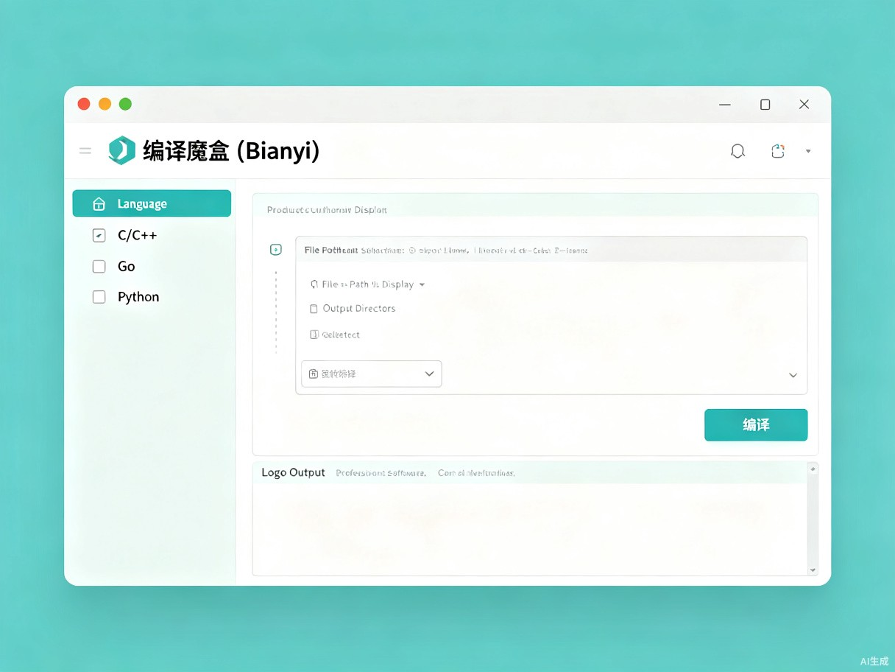
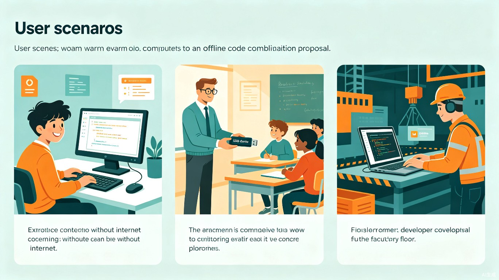
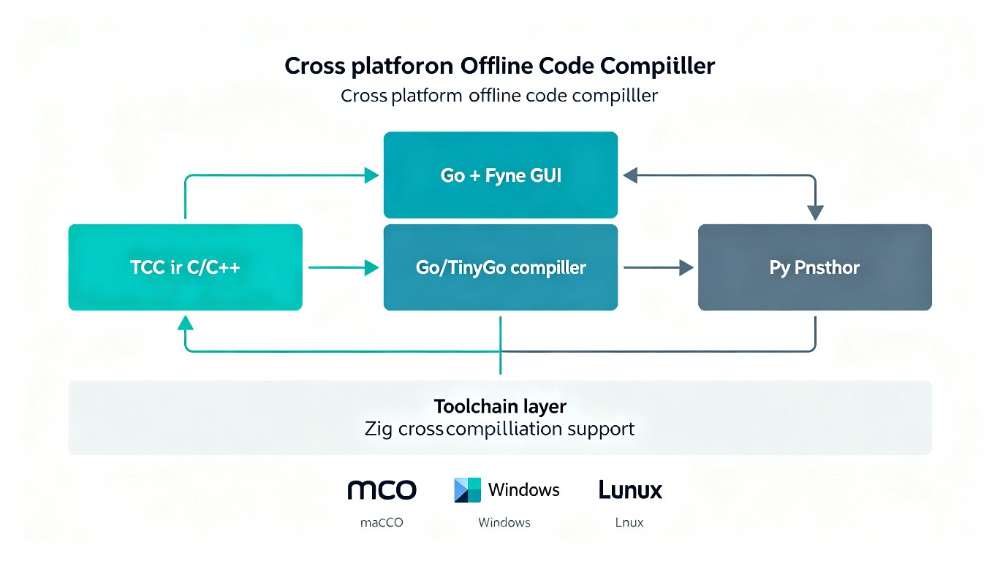

创意介绍
想解决什么问题？
编程学习者和开发者在编译代码时面临两大痛点——网络受限无法安装编译器（学校机房断网、偏远地区网络差、涉密环境禁网），以及不同语言需要不同的编译环境（C 要装 GCC，Go 要装 SDK，Python 要装 PyInstaller），配置过程极其繁琐，新手往往在"配环境"这一步就被劝退。
为什么会想到做这个？
在编程教学中发现，大量初学者花在"配置编译环境"上的时间比写代码还多。安装 GCC 可能遇到路径问题、版本冲突，折腾两小时才能编译出第一个 Hello World。如果在一个工具里内置所有编译器，打开即可编译，将极大降低编程入门门槛。同时，在断网场景（考场、机房、嵌入式开发现场），一个离线可用的编译工具也有切实需求。
产品形态
一款桌面应用（当前支持 macOS 和 Windows），内置轻量级编译器工具链（TCC 用于 C 语言编译，Zig 用于跨平台交叉编译），提供图形化界面。用户只需选择编程语言、选择源代码文件和目标平台，点击"编译"按钮即可生成可执行文件。macOS 可直接使用系统自带的 Clang 编译器；Windows 通过内置的 Zig 工具链完成编译，无需额外安装。
核心理念：像使用计算器一样简单——打开，选择，编译，完成。
界面预览

目标用户与痛点
编程初学者 / CS 学生
想快速编译运行代码，但不会配置编译环境，常被"配环境"劝退
编程教师 / 培训机构
需在多台电脑上统一部署编译环境，希望"开箱即用"
嵌入式开发者
在工厂、现场等断网环境下需要快速编译测试代码
竞赛选手
在考场或受限环境中需要编译工具，自带 Bianyi 即可参赛
没有 Bianyi 时
- 安装编译器需要联网下载，断网环境无法使用
- 不同语言装不同环境，耗时数小时
- 学校机房有权限限制，无法自行安装
- 跨平台编译需配置交叉编译工具链
有了 Bianyi 后
- 内置 TCC + Zig 工具链，拷贝即用
- 支持 C/Go/Python 三种语言一站式编译
- 无需安装权限，直接运行
- 选择目标平台，一键交叉编译
典型使用场景

技术方案
技术选型
| 组件 | 技术 | 选型理由 |
|---|---|---|
| 启动器语言 | Go | 编译为单二进制文件，无运行时依赖，跨平台编译方便 |
| GUI 框架 | Fyne | Go 原生 GUI 库，跨平台，轻量级，原生外观 |
| C/C++ 编译器 | TCC / Zig | 极小体积，快速编译，Zig 支持交叉编译 |
| Go 编译器 | Go / TinyGo | 原生跨平台编译能力，TinyGo 体积更小 |
| Python 打包 | PyInstaller | 成熟打包工具，支持单文件输出 |
系统架构

编译器接口设计
使用流程
- 双击运行 Bianyi，打开图形界面
- 选择编程语言（C/C++、Go、Python），选择文件后会自动识别语言
- 点击"选择文件"，选中源代码文件
- 选择输出目录和目标平台（macOS / Windows）
- 点击"编译"按钮，查看编译日志
- 编译完成，可执行文件自动生成在输出目录
扩展机制：架构设计天然支持扩展：
- 添加新语言：只需创建新编译器文件，实现 Compiler 接口（Name、SupportedExtensions、Compile 三个方法），在 main.go 中调用 compiler.Register() 注册即可。例如可扩展 Rust、Java、TypeScript 等。
- 添加新系统：只需在 toolchains/ 目录下新增对应的平台子目录（如 linux_amd64/），放入该平台的编译器二进制文件，程序运行时会根据当前系统自动匹配对应工具链。
价值与意义
效率提升
将"安装编译器 + 配环境 + 编译"三步简化为"选文件 + 点编译"两步。环境配置从 1-2 小时降到 0 分钟。教师部署全班环境从数小时缩短到几分钟。
商业价值
面向编程教育市场（K12、高校、培训机构），可作为"编程环境标准化"工具。可扩展插件架构支持更多语言，具有平台化潜力。
社会价值
降低编程入门门槛，让教育资源匮乏地区的学生也能零成本开始编程学习。断网可用特性缩小了数字鸿沟。
项目进展
目前项目已完成核心框架开发，具备以下能力：
✅ GUI 界面
基于 Fyne 的跨平台图形界面，支持语言选择、文件选择、编译日志输出
✅ C/C++ 编译
内置 TCC 编译器 + Zig 交叉编译支持，支持 .c / .cpp / .cc 文件；macOS 下也可使用系统 Clang
✅ Go 编译
查找系统 Go 编译器进行编译，支持通过 GOOS 环境变量实现跨平台编译
✅ Python 打包
查找系统已安装的 PyInstaller，将 .py 文件打包为独立可执行文件；跨平台编译需配合 Zig
后续计划：完善 Windows 工具链打包；添加 Linux 系统支持（利用已有的扩展架构，放入 linux_amd64 工具链即可）；扩展 Rust、Java 等更多语言支持；优化用户体验。